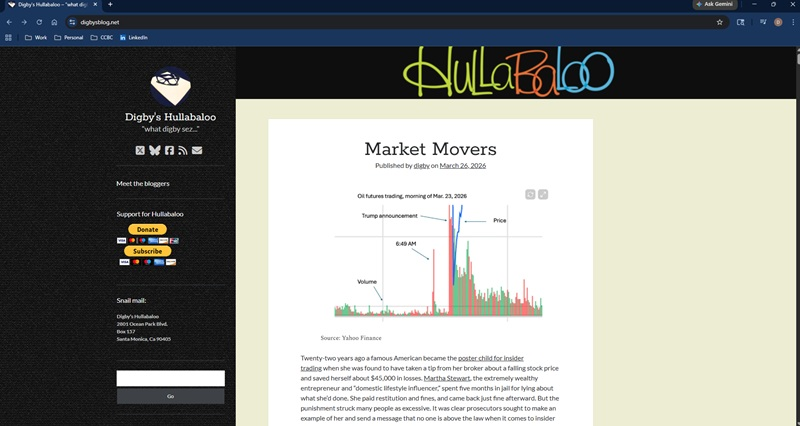

David Pintuck Lab 06
Hullabaloo

What is the URL of the website?
https://digbysblog.net/
What is the name of the website?
The site is named Hullabaloo but is also known as Digby’s Blog.
Who is the site's target audience?
The site's main audience is progressive new readers, journalists, and political commentators.
How is the site organized?
The site is linearly organized.
What is the Audit Score according to the Accessibility Checker?
According to Accessibility Checker the site scored a 83%. There were 2 links that did not have
discernible text.
What is the site's effectiveness? Does it support users in completing actions accurately?
The site seems effective for what it is for. Some of the links to Digby’s social networks do not work.
How is the engagement? Is it pleasant to use and appropriate for its industry/topic?
It is pleasant enough to use for what it is. The best thing is that there are no ads that are
everywhere on news sites these days, and you are straight into the content with no pay walls.
Make at least one recommendation to improve this website based on what you learned in this module.
First, I would downsize the navigation pane on the left side of the page. It would only contain the
following with links to pages with the content.
- Home
- Meet the bloggers
- Support Hullabaloo
- Contact Us
- Recent Posts
- Archives
I would also move the search button to the upper-right of the page and change the button text from
“Go” to “Search”.
This seems to be a mobile-first design. Once you get to wider screens, the following happens.
- The page header is off-center. I would make it take up the whole top of the page to center
it and push the navigation pane down below it. The header appears to be an image file. I
would just use text and a more legible font.
- The navigation pane is too close to the content. I would push this to the left to make the content
background larger. This way, the page will not look so lopsided and not take away from the content.